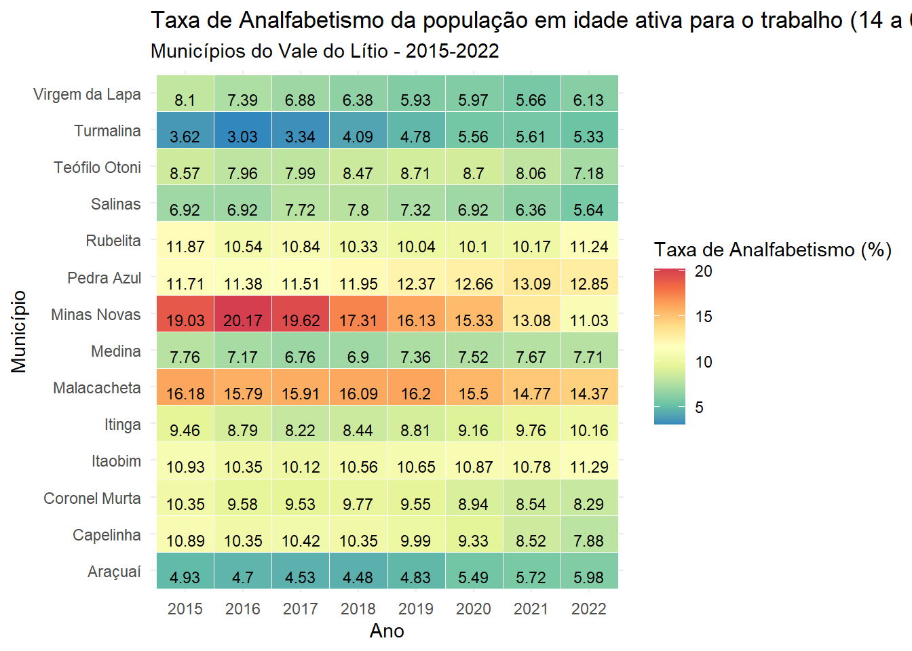
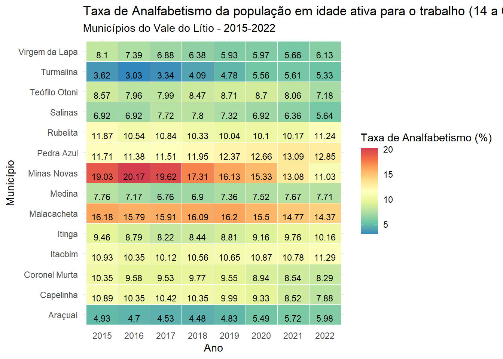
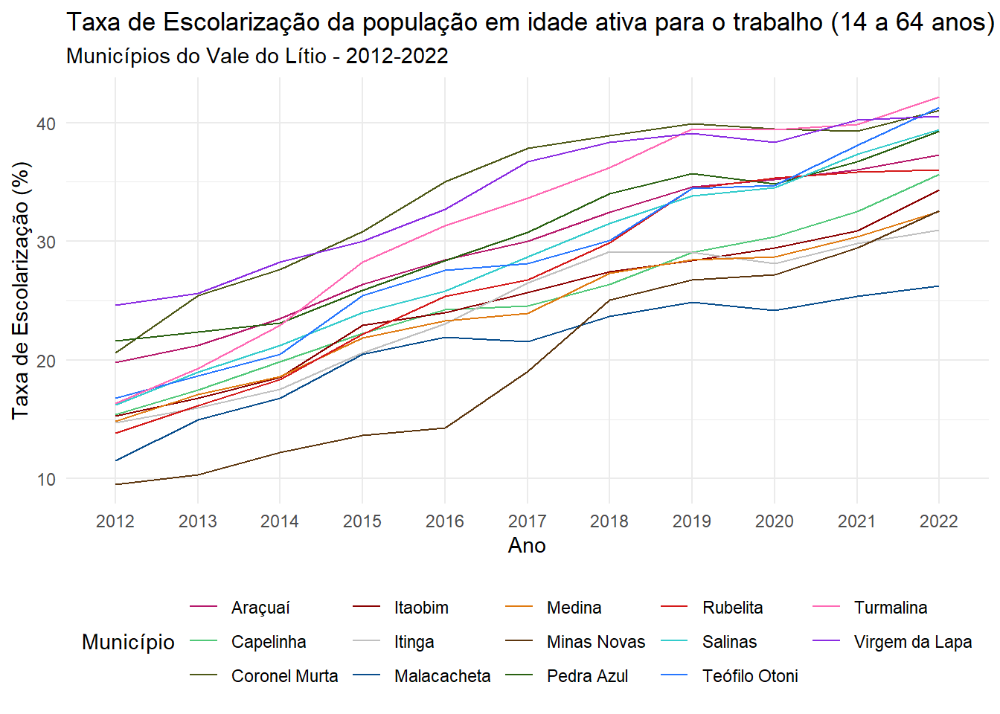
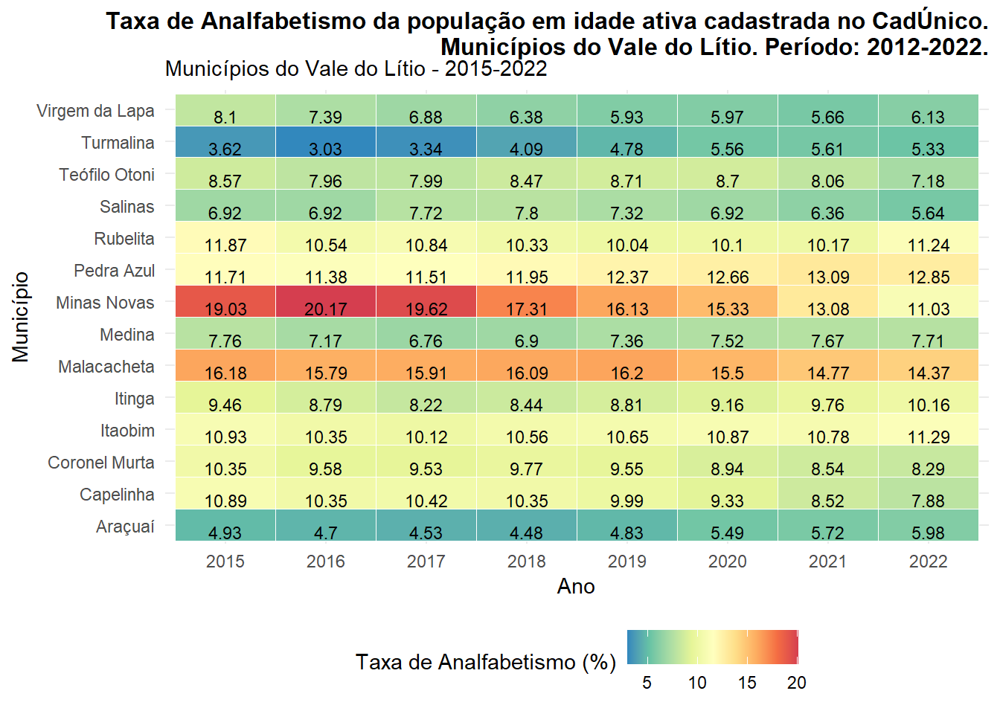
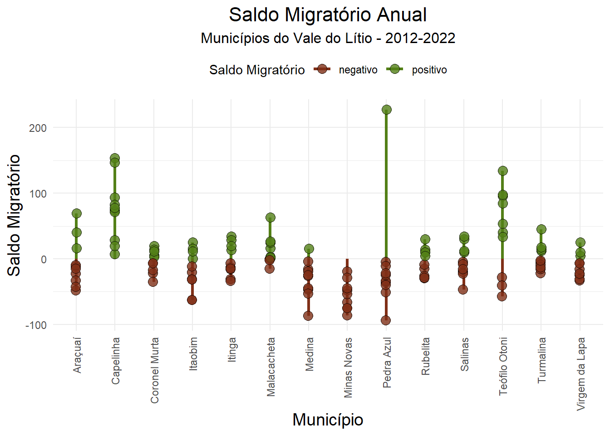
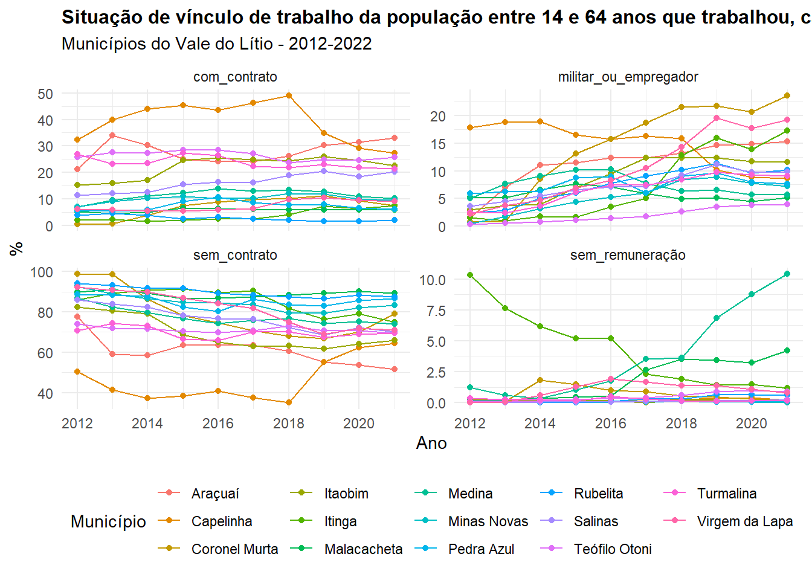

Warning: package 'ggplot2' was built under R version 4.2.3Warning: package 'reshape2' was built under R version 4.2.3
[Em edição]
Para entender o perfil da população em idade ativa para o trabalho no Vale do Lítio, foram analisados indicadores a partir da Base do Cadastro Único do Governo Federal. O CadÚnico é uma ferramenta que direciona o planejamento de políticas públicas baseando-se em informações sociais, demográficas e residenciais de uma parte significativa da população brasileira, sob uma perspectiva longitudinal. De acordo com a legislação em vigor, os indivíduos e famílias inscritos devem atualizar seus dados a cada dois anos. Os dados são verificados por meio do cruzamento com outras fontes de informação sobre a população brasileira, visando assegurar a maior fidelidade possível das informações fornecidas. O estudo abrange o período de 2012 a 2022 nos municípios do Vale do Lítio.
Para o cálculo da taxa de analfabetismo da população inscrita no CadÚnico em idade ativa para o trabalho, considerou-se a faixa etária entre 15 e 64 anos. Observa-se que Minas Novas e Malacacheta acumulam o maior percentual de pessoas em idade para o trabalho na situação de analfabetismo. Os municípios de Araçuaí e Turmalina se posicionam no outro extremo, com as menores taxas de analfabetismo dentro do grupo analisado. Rubelita e Itinga apresentaram tendência de elevação da taxa nos últimos anos, enquanto que Minas Novas revelou tendência de redução da taxa de analfabetismo. Os percentuais anuais no total do grupo variam entre 8,93% (2022) e 18,44% em 2014, quando os municípios tiveram a maior taxa.
Warning: package 'ggplot2' was built under R version 4.2.3Warning: package 'reshape2' was built under R version 4.2.3
Fonte: Base Identificada do Cadastro Único do Governo Federal.
A taxa de escolarização representa o percentual de indivíduos com idade acima de 25 anos que concluiu a educação básica, ou seja, o ensino médio. Assim, tem-se a média geral de estudo do grupo em foco. No grupo analisado, a média geral do período é de 27%, sendo que Coronel Murta apresenta a melhor média no período (43,18%) e Minas Novas, a menor média (20,01%), da população em idade ativa em situação de vulnerabilidade. Os dados mostram que a taxa de escolarização vem crescendo entre os anos de 2012 e 2022. No último ano, Turmalina se destaca com 42,14% do segmento populacional com idade acima de 25 que possui o ensino médio completo, seguido por Teófilo Otoni e Turmalina.

Fonte: Base Identificada do Cadastro Único do Governo Federal
Os dados referentes à condição de vínculo empregatício referem-se à população inscrita no CadÚnico, que declarou ter trabalhado na semana anterior à inscrição ou atualização, no ano de referência, com fechamento da base em dezembro do mesmo ano. Observa-se a predominância de trabalho na condição de autônomo ou sem vínculo contratual em todos os municípios e durante todo o período apurado. Nota-se também uma tendência de aumento no percentual de pessoas que prestaram algum serviço na condição de aprendiz, estagiário ou sem remuneração. Os municípios de Rubelita, Itinga e Malacacheta apresentam maior percentual de pessoas que trabalharam sem qualquer tipo de vínculo empregatício no período analisado. Araçuaí, Turmalina, Teófilo Otoni e Virgem da Lapa são os municípios com maior percentual de trabalhadores autônomos ou remunerados sem contrato de trabalho. Coronel Murta e Virgem da Lapa possuem o maior percentual de indivíduos no serviço militar ou como empregadores, inscritos no CadÚnico nos últimos três anos analisados. Entre 2012 e 2018, Itinga foi o município com maior percentual de indivíduos na condição de aprendiz, estagiário ou que trabalharam sem remuneração, e Medina nos três últimos anos analisados. Os dados de 2022 não estavam disponíveis na base acessada.

Fonte: Base Identificada do Cadastro Único do Governo Federal
Observa-se, de modo geral, que a população feminina apresenta maior representatividade em relação à população masculina, na faixa etária de 14 a 64 anos, na base do Cadastro Único. A política socioassistencial que recomenda que as inscrições sejam feitas preferencialmente por mulheres é a principal razão para este quadro. A média geral é de 45% para homens e 55% para mulheres inscritas, ao longo de todo o período, nos municípios do Vale do Lítio.
[Inserir representação gráfica ou tabular]
Com base nos dados do Cadastro Único, foi apurado o saldo migratório e a taxa líquida de migração do período entre 2012 e 2022 dos municípios do Projeto Lítio. O público-alvo consistiu na população em idade ativa (14 a 64 anos). A definição de migrante baseou-se no município de última residência no ano anterior, constituindo, assim, uma análise por período. O saldo migratório refere-se à diferença entre o número de pessoas que entraram no município e o número de pessoas que saíram, considerando os indivíduos que permaneceram registrados na base de dados. A taxa líquida de migração indica a proporção do saldo em relação à população com idade entre 14 e 64 anos, no final do período considerado, já ajustada pelas saídas no intervalo (mortalidade, remoção da base de dados e mudança para outro estado ou país). Nos municípios do Vale do Lítio, prevalece um saldo migratório negativo ou próximo de zero, indicando a falta de retenção da população em idade ativa para o trabalho e em situação de vulnerabilidade financeira.
[Rever gráfico - e os anos?]

Fonte: Base Identificada do Cadastro Único do Governo Federal
A migração constitui um componente imediato de resposta a condicionantes ou choques na população. Conforme os dados observados, essa resposta não se verificou nos municípios, mantendo-se a tendência à evasão. Rubelita, Salinas e Turmalina apresentaram taxa líquida de migração positiva entre 2021 e 2022, porém com saldo líquido pouco expressivo em relação ao grupo populacional analisado. Capelinha vem mantendo uma taxa líquida de migração positiva, embora com saldo migratório também pouco expressivo. Pedra Azul exibiu sinais de reversão do cenário negativo de contribuição no crescimento populacional por migração, mas somente entre 2021 e 2022. Teófilo Otoni, que é o maior município em termos populacionais do grupo do Vale do Lítio, apresentou taxas de migração oscilantes no período, revelando uma baixa capacidade de retenção e caracterizando-se como um município de passagem.

Fonte: Base Identificada do Cadastro Único do Governo Federal